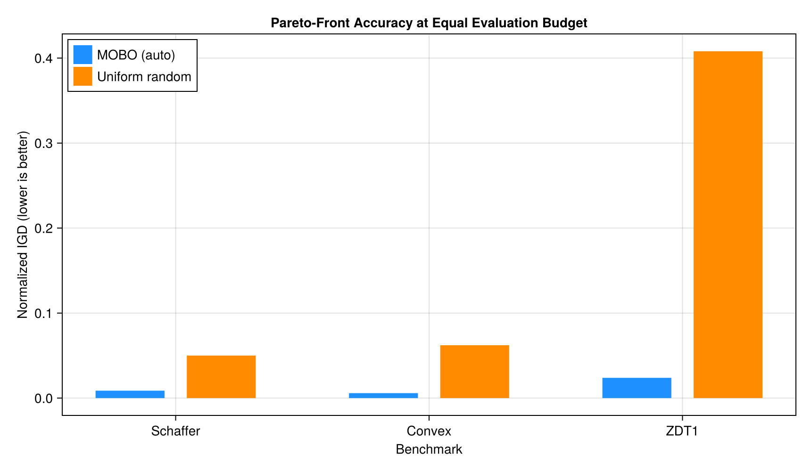
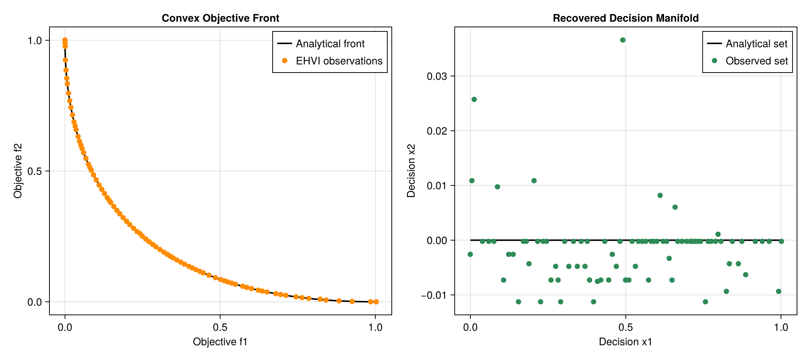

Benchmarks
The benchmark suite uses problems with analytical Pareto fronts:
- Schaffer N.1;
- a convex two-parameter, two-objective problem;
- four-dimensional ZDT1.
Run all benchmarks:
julia --project=. benchmark/run_benchmarks.jlRun a subset:
julia --project=. benchmark/run_benchmarks.jl schaffer zdt1Observed accuracy
Normalized inverted generational distance (IGD) is lower when the observed front more closely covers the analytical front.

| Problem | Budget | MOBO (:auto) IGD | Random IGD |
|---|---|---|---|
| Schaffer N.1 | 80 | 0.008708 | 0.050024 |
| Convex bi-objective | 100 | 0.005802 | 0.062199 |
| ZDT1 (4D) | 180 | 0.023823 | 0.408050 |

For ZDT1, the two-objective EHVI acquisition and ARD kernel reduced IGD by about 56% relative to the original ParEGO-only implementation. With a 240-evaluation high-accuracy configuration, IGD reached 0.022147 and all three auxiliary decision variables were exactly zero on the returned front.
Generate every documentation figure from fresh optimization runs:
julia --project=benchmark -e '
using Pkg
Pkg.develop(path=pwd())
include("benchmark/generate_plots.jl")'